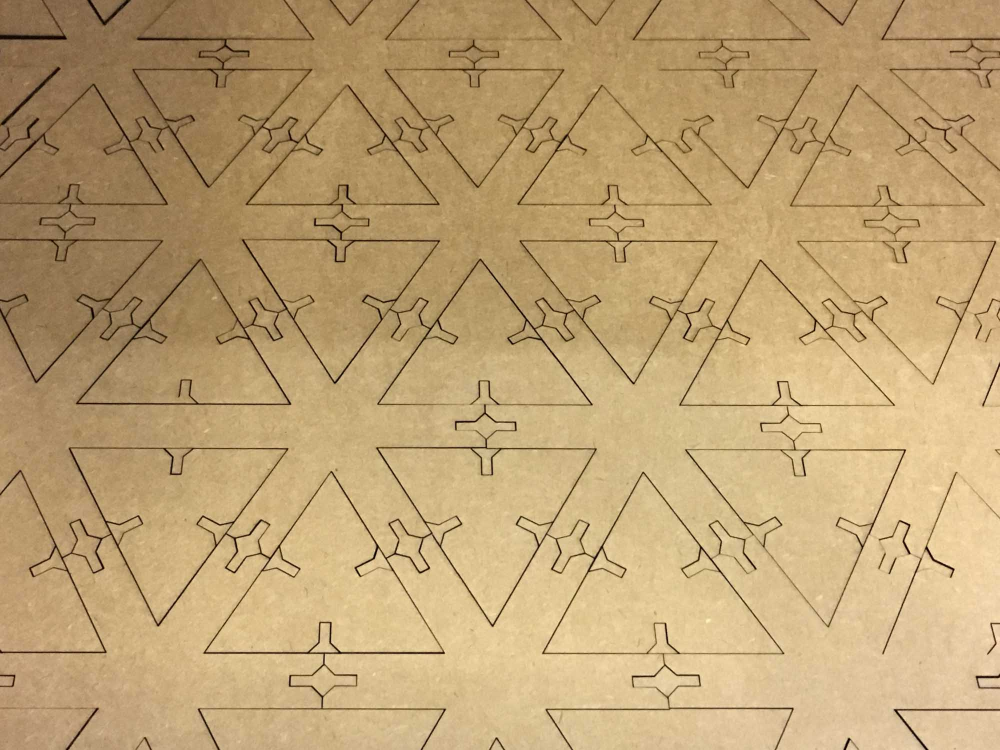

CNC Laser Cutting
Design, make, and document a parametric press-fit construction kit, accounting for the lasercutter kerf, which can be assembled in multiple ways.
This week, we are designing and building a laser cut press fit construction kit. For my kit, I wanted to follow a dumb unit, smart system approach. That is, how can you build a complex spatial structure from very simple building units.
The base unit is a parametric fork, built in Grasshopper for Rhino that takes into account the kerf of the laser cutter and enables the user to modify the slot dimension to account for different material ticknesses.
The building kit grows by adding two or more pieces together. The assembly process turned out to be much more fun than what I was anticipating and I ended up spending more time playing with the parts than cutting them on the laser cutter.
During the construction process, there are three levels of bracing to add structural support. The first level of bracing is simply two pieces interlocking together. The second level of bracing is assembling the pieces into a ring. Finally, the to get an additional level bracing, these rings can be assembled into polygons, opening up many possibilities for building spatial stuctures.
An unexpected outcome during the construction process was realizing that the stucture self-balances into a stable position as you add more pieces to the system. This effect orbits your construction in unexpected ways and changes its appearance everytime you add a piece.
We played a while with the settings of the laser cutter, but eventually the settings that seemed to work for the 4mm micro ondulated cardboard we were using were: Speed: 20%; Power: 100%; Frequency: 200 Hz. However, I was somewhat upset with the amount of wasted cardboard in my design, so I went on to design another construction kit that tried to minimize wasted material and had more one unit to open up more possibilites for construction.
Zero-Waste Contsruction Kit
Ok, not 0, but it gets pretty close.
I designed the pattern in Grasshopper for Rhino and then fired it up in the laser cutter.
The two basic units in this design are the triangle and a 6 tip star, both with paremetrically designed joints.
The system allows for both construction of an infinite spatial grid or freestyle construction.
The system allows for both construction of an infinite spatial grid or freestyle construction.
CNC Vinyl Cutting
Cut something on the vinyl cutter.
For this part of the assignment, I designed a logo for Joi Ito's Deploy or Die motto for the MIT Media Lab. I decided to drop the Or Die part, following President Obama's recommendations. Next, I proceeded to bomb the lab with stickers.

Neil mentioned in class that the vinyl cutter is generally one of the most underrecognized machines in Fab Labs, in part because they can be tricky to set up. Luckily, we had Tom to help us in the process of adjusting the height of the blade of the cutter. At the lab we are using the Roland CAMM-1 GS-24 vinyl cutter.
The design was done in Adobe Illustrator. The DEPLOY typography had to be vectorized before outputting the vector file (.svg) file for cutting. This was used with the Object > Expand command in illustrator. Then, I used Mods to control the vinyl cutter. To cut through the vinyl without cutting the paper underneath we used 80 for force, and a speed of 2.
After the cuts, I need to weed out the parts that are not part of the inteded design. During the weeding process there is room for experimenting with removing parts of the original design or using for the sticker the negative of what you planned of cutting.
Then, I added a layer of adhesive transfer lining. Pro tip: The MIT ID makes a great improvised press tool.
- Date: September 20, 2017
- Skills Learned: Laser cutting, Vinyl CNC cutting, Version Control (Gitlab)